每天高频班次的 AI 领域要闻速览：发生了什么，为什么重要。
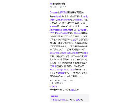
缩略图加载失败，点此查看海报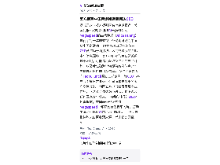
缩略图加载失败，点此查看海报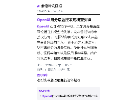
缩略图加载失败，点此查看海报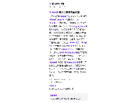
缩略图加载失败，点此查看海报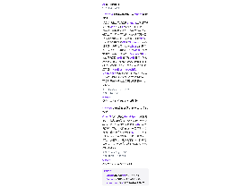
缩略图加载失败，点此查看海报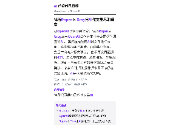
缩略图加载失败，点此查看海报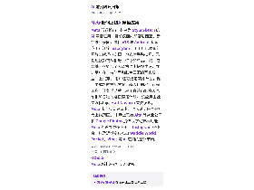
缩略图加载失败，点此查看海报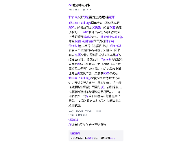
缩略图加载失败，点此查看海报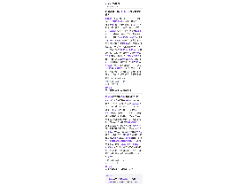
缩略图加载失败，点此查看海报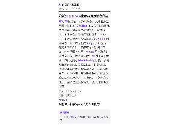
缩略图加载失败，点此查看海报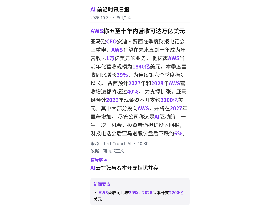
缩略图加载失败，点此查看海报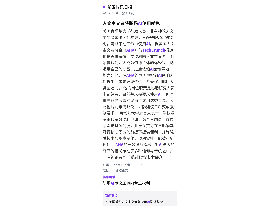
缩略图加载失败，点此查看海报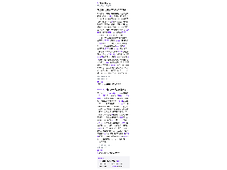
缩略图加载失败，点此查看海报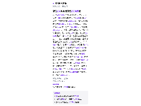
缩略图加载失败，点此查看海报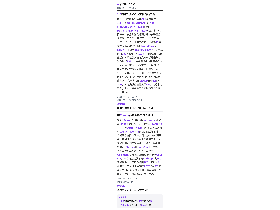
缩略图加载失败，点此查看海报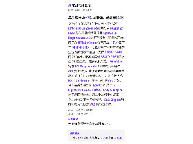
缩略图加载失败，点此查看海报英伟达与麻省理工学院研究人员组成的 Efficient-Large-Model 团队在 Hugging Face 发布了视频增强项目 Open-H3-Regenerate-2K 的模型权重，配套推理代码已在 NVlabs/Sana 仓库开放。 该方案基于 MiniMax H3，把低分辨率视频草稿重新生成为高分辨率画面，支持 2560×1440 的 2K 输出，最高可实现 3840×2160 的原生 4K 重生成。 需要说明的是，MiniMax 官方 H3-Regenerate-2K 模块仍仅通过 API 提供服务，此次开放的是高分辨率重生成环节可自行部署的实现。 训练阶段冻结 H3 Transformer 主干与视频 VAE 参数，只训练新增的细化 LoRA；推理时与 LightX2V FL2VA Turbo、LMS Sharp 等社区适配器合并，经三步去噪重生成细节，并借助潜空间放大器、SoL-Engine 稀疏注意力与快速 VAE 解码器提速。
依据：可提取原文正文 · 可提取正文；不含交互图表、图片或付费隐藏内容
量子位15:31原文链接 ↗
国产开源文档解析模型OXR参数量仅1.3B，在OmniDocBench（97.18）、olmOCR-Bench（87.84）和DocParsingBench（87.76）三个榜单均列第一；官方称整套评测流程与代码已全量开源、可复现。 模型可一次处理表格、公式、代码块、化学方程式、印章等13类文档元素，输出结构化Markdown或LaTeX。 在单张RTX PRO 6000上，端到端解析100页文档耗时101秒。 训练上的关键是后训练阶段引入面向文档解析的递归自我改进（RSI）：由通用多模态模型把样本分为正确、错误、不确定三类，经归因聚类后生成新数据回流训练，以减少对人工标注的依赖。 架构上，独立轻量模型负责版面分析，主模型承担内容识别与阅读顺序判断。 文章称其在GitHub已获1.1K+ Star，官方提供免注册免费API并支持本地部署；上述效果主要来自团队自测与作者上手体验。
依据：原文选段（可能不完整） · 原文较长，使用有界正文选段，可能遗漏未选段信息
量子位13:52原文链接 ↗
据X和Discord社区爆料，Anthropic两款新Claude模型已进入早期测试：Fable 5.5与下一代Opus。 Azure模型目录曾短暂出现claude-fable-5-5条目，随后被删除，但截图已在网络流传。 网友放出的实测图中，鹈鹕骑自行车场景出现鹈鹕叼鱼、车轮光影与沙滩车辙等细节；游戏手柄对比则显示Fable 5.5比Opus 5.5细节更多。 另有开发者在基准测试平台发现代号Obsidian 3的模型，跑分略高于现行Opus 5.5。 文章将密集发布与Anthropic的IPO进程联系：公司已向美国SEC公开提交S-1招股书，市场讨论估值在1.5万亿至2万亿美元之间。 有消息人士称新模型最快一至两周内发布，目前均未获官方确认。
依据：可提取原文正文 · 可提取正文；不含交互图表、图片或付费隐藏内容
量子位13:50原文链接 ↗
清华大学、无问芯穹与智元近日联合提出群体经验学习（CEL）范式，让机器人在人类示教之外，共享同伴在真实任务中积累的成功经验，并在96台真实机器人组成的集群中完成规模化验证。 实验覆盖插花、叠衣服、手机充电、凳子组装、手机包装五项任务：两台未参与训练的机器人在600次测试中失败15次，总体成功率97.5%，五项任务均超过6名人类操作员的平均水平。 其中需要连续多步的手机包装任务，成功率从79.2%提升到98.3%，连续测试120次仅失败2次。 研究还报告了规模化趋势：参与训练的机器人从16台增至96台，成功率由86.7%升至98.3%。 系统层面，团队基于开源强化学习框架RLinf构建容错异步训练系统FATS，96台规模下累计采集9834轮执行经验，期间22台机器人发生30次故障，故障造成的时间损失仅占全部运行机时的1.3%；算法层面提出失败引导的经验检索微调算法FERT，从成功操作中找可学做法、从失败操作中定位问题。 该文由无问芯穹提供、量子位授权转载，上述效果为公司方说法，暂未见第三方复现。
依据：可提取原文正文 · 可提取正文；不含交互图表、图片或付费隐藏内容
量子位11:48原文链接 ↗
量子位宣布，MEET2027智能未来大会将于12月9日举行，主题为「智行合一·驭见未来」，报名通道已通过量子位公众号开放。 大会议题聚焦大模型与Agent的工程化落地、具身智能规模化进场、AI原生组织的管理重构与企业数智化转型。 首批公布嘉宾包括中国科学院自动化研究所副总工程师、紫东太初大模型研究中心主任，中欧国际工商学院AI与管理创新研究中心主任方跃，昆仑万维董事长兼CEO方汉，基元律动创始人兼CEO，酷哇科技创始人兼CTO，原力灵机联合创始人兼CTO，脸谱心智创始人，以及无问芯穹联合创始人兼CEO夏立雪；主办方称更多嘉宾仍在确认中。 大会现场还将发布人工智能年度榜单与年度AI趋势报告：榜单征集于11月16日截止，趋势报告案例征集于11月20日截止。 本文为大会报名与征集信息，属主办方推广内容。
依据：可提取原文正文 · 可提取正文；不含交互图表、图片或付费隐藏内容
量子位11:40原文链接 ↗
美国肯塔基大学行政人员、非有神论人文主义者戴维·杜尔曼近日获得职场宗教豁免，可以不在工作中使用AI。 据美国人文主义者协会（AHA）与TechCrunch报道，他是首位获得此类便利的人文主义者。 杜尔曼认为，人成为道德主体的途径是主动运用自己的心智，过度依赖AI会削弱这一能力；他还在AHA的声明中提到AI影响人们谋生、带来环境代价，并替代和挪用人类创造力。 他的岗位职责是协助研究人员申请经费，目前并未被要求使用AI，但同事与领导层曾建议员工试用这类工具，因此他提前申请豁免，以防建议日后变成强制要求。 肯塔基大学发言人表示，学校逐案审核宗教便利申请，综合考虑员工岗位职责与具体情况，此次认定可在不影响其履行核心职能的前提下提供便利，并称随着技术与职责变化，便利安排可能被重新评估。 AHA的一名律师指出，对AI与人的尊严的担忧存在于多种信仰与传统之中，非有神论者同样受到职场法律保护。
依据：可提取原文正文 · 可提取正文；不含交互图表、图片或付费隐藏内容
TechCrunch AI09:20原文链接 ↗
智己LS8 NEO纯电版开启预售，推出两个版本：93度磷酸铁锂电池版CLTC续航684公里，预售指导价25.98万元，叠加现金权益后为24.98万元；103度单晶三元电池版续航752公里，指导价27.98万元，权益价26.98万元。 两款电池均由智己与宁德时代联合定制，基于全域800V平台，官方称15分钟最多补能529公里，电量估算误差控制在3%以内。 底盘是此次主打卖点：全系标配全线控转向与双向24度后轮转向，车长5085毫米、轴距3060毫米，转弯半径4.85米，并配备三重安全冗余和SynVector全域线控矢量扭矩协同控制；智己称对开路面车身稳定性比传统四驱方案提升80%。 智能化方面，辅助驾驶接入Momenta世界模型，座舱搭载与阿里千问合作的IM Claw智能体，首任非营运车主享Token终身免费、辅助驾驶全功能包终身免费。 新车计划11月5日上市，所处25万元级纯电SUV市场竞争激烈，理想2026款i6限时权益价已下探至23.98万元。
依据：可提取原文正文 · 可提取正文；不含交互图表、图片或付费隐藏内容
量子位08:19原文链接 ↗
亚马逊CEO安迪·贾西在季度财报电话会上重申，AWS有望在未来五到十年成为年营收达1万亿美元的业务。 他披露AWS当前年化营收规模为1840亿美元，本季度营收同比增长39%，为连续第六个季度稳步增长。 贾西预计2027年和2028年AWS营收增速都将超过40%。 为支撑扩张，亚马逊预计2026年现金资本开支约2200亿美元，其中大部分投向AWS，并将在2027年显著增加。 尽管公司称这是AI驱动的“一生一次”机会，投资者仍担忧投入回报，财报电话会后亚马逊股价盘后下跌约6%。
依据：可提取原文正文 · 可提取正文；不含交互图表、图片或付费隐藏内容
TechCrunch AI07:42原文链接 ↗
Reddit在第三季度财报中宣布，将把网站转向以「登录后体验」为主，目的是防止数据被AI抓取，转而与模型厂商签订授权协议，同时提升广告变现能力。 财报显示，Reddit全球日活用户三季度为1.303亿，与上季度基本持平；最大市场美国的日活从二季度的5320万降至5070万，同比下降2%。 公司称10月来自搜索的推荐流量平均每周减少超过100万次，并警告若趋势延续，下季度日活可能下滑十几个百分点，按其口径约为1.15亿至1.17亿。 同期变现效率明显提升：营收同比增长53%至8.95亿美元，净利润增长74%至2.83亿美元，广告收入增长54%至8.47亿美元，含AI数据授权在内的非广告收入增长35%至4800万美元；美国每日活用户平均收入增长53%至13.82美元。 该转型不会一步到位，第四季度将先在美国以外的部分市场测试，全球推广尚无时间表，公司称仍保留匿名浏览的隐身模式。
依据：可提取原文正文 · 可提取正文；不含交互图表、图片或付费隐藏内容
TechCrunch AI04:08原文链接 ↗
Rivian与大众集团规模58亿美元的合资公司进一步扩容，新增内容是把Rivian AI语音助手技术的部分组件授权给大众使用；消息来自Rivian第三季度投资者材料。 Rivian未披露授权费用、付款条件以及哪些大众车型将采用该技术，仅表示这套近期已在其自身车型上线的助手，可能率先出现在大众低成本电动车ID EVERY1上，该车也是合资公司框架下首款采用Rivian软件与电子电气架构的大众车型。 双方合资于2024年成立，最初宣布价值最高50亿美元，数月后大众把到2027年的投资承诺提高到最高58亿美元。 Rivian称此次扩容是「自研平台可扩展性的证明」。 该AI助手研发历时两年，2026年9月才在R1S、R1T和R2车型上线，基于自研的智能体框架，可识别用户意图并调度车内软件；公司还称新电子架构把电子控制单元从17个减到7个。
依据：可提取原文正文 · 可提取正文；不含交互图表、图片或付费隐藏内容
TechCrunch AI04:05原文链接 ↗
Thrive Holdings周四宣布收购安防公司ADT，价格为每股10美元、约合76亿美元股权对价；ADT称计入其他因素后交易企业总价值为153亿美元。 Thrive Holdings是从Josh Kushner旗下风投Thrive Capital分拆出的私募股权公司，OpenAI既是其合作方也是投资方，公司称目前持有逾75家企业，思路是长期持有并用AI改造这些公司。 按其说法，OpenAI向这些公司提供AI模型与技术，并派驻被称为“前置部署工程师”的人员。 双方未公布将推出哪些AI安防产品，只表示ADT将成为Thrive Holdings智能家居安防业务的基础，并计划投入资金、发布新品。 这一领域近期动作频繁：苹果与LG、施耐德电气合作推出智能家居与家庭安防产品，亚马逊也更新了含AI家用摄像头的智能家居产品线。 交易的具体交割条件与时间表未在文中披露。
依据：可提取原文正文 · 可提取正文；不含交互图表、图片或付费隐藏内容
TechCrunch AI03:56原文链接 ↗
Meta 低调推出一款名为 Style Sketch 的 AI 穿搭应用，目前仅面向印度尼西亚、新加坡和泰国，提供 iOS 与 Android 版本。 应用可连接 Instagram，用用户已发布的照片生成虚拟衣橱，也支持手动拍照、录制短视频或从相册上传添加单品。 随后它会基于衣橱与个人风格给出搭配建议，并让用户在“按体型和肤色匹配的写实模型”上试穿。 用户还可选定某件单品，据此生成新的搭配方案；输入目的地、行程天数与计划活动后，应用会给出结合天气预报和日程的逐日穿搭计划。 该应用由社交媒体顾问 Matt Navarra 首先发现，Meta 未回应置评请求，也未说明是否会扩大上线范围。 市场上已有 Alta 等创业公司和 Google Photos 提供数字化衣橱功能，Meta 的差异更多在于与 Instagram 的整合，以及近期密集推出 Waddle World、Pocket、Vibes 等 AI 应用的整体节奏。
依据：可提取原文正文 · 可提取正文；不含交互图表、图片或付费隐藏内容
TechCrunch AI03:14原文链接 ↗
以会议记录工具起家的Granola上线听写功能：在Mac上按下Fn键即可开口说话，工具会清理并格式化语音，最终文本可落入任意应用，用来写笔记、输入提示词或回复邮件和消息。 该功能目前仅支持Mac，公司称将很快登陆iOS和Windows，且不限字数、免费使用。 这与Wispr此前的动作方向相反——以听写见长的Wispr几个月前刚推出会议记录功能。 Granola与Wispr的估值分别为15亿美元和20亿美元；前者聚焦会议相关自动化与笔记，后者正通过研究实验室自建模型、探索不同的人机交互界面。 Fireflies、Speechify、Monologue等其他语音创业公司也已从单一功能转向会议记录加听写的多能应用，而今年早些时候的主流思路还是把一个功能做深。
依据：可提取原文正文 · 可提取正文；不含交互图表、图片或付费隐藏内容
TechCrunch AI01:54原文链接 ↗
OpenAI发布更新版Model Spec（模型规范）。 据其订阅简介，新版规范列出五项核心价值，用以引导能力更强的AI走向稳健判断、尊重人的自主性，并忠实于人类意图。 由于原文页面返回403、正文不可获取，规范的具体条款、五项价值的完整表述以及相较上一版改动了什么，目前无法核实。 以上信息仅来自官方简介，不代表已读全文。
依据：订阅简介（原文未读取） · 原文不可用：原文HTTP 403；仅依据订阅简介，信息可能不完整
OpenAI Blog01:00原文链接 ↗
据《纽约时报》援引匿名消息源报道，美国情报机构对新加坡AI云服务公司Megaspeed的高管黄乐（Alice Huang）进行了约一年的监视，怀疑她可能为中国从事间谍活动。 她曾多次出现在英伟达CEO黄仁勋于新加坡地区商务晚宴的合影中；消息源称，美方担心她与黄仁勋关系过于密切，可能借机获取英伟达的产品计划，以及黄仁勋游说特朗普政府放宽对华先进技术出口的相关信息。 英伟达发言人向TechCrunch否认上述猜测，称CEO与客户会面属日常业务，公司每年与数千名客户高管交流；地区云客户只获得常规商业信息，不涉及英伟达商业机密，也不涉及任何国家安全信息。 《纽约时报》2025年还曾报道，美国商务部调查过Megaspeed，怀疑其转售受限芯片、帮助中国企业规避AI芯片出口管制。 上述间谍指控均来自匿名消息源，尚未获公开证实。
依据：可提取原文正文 · 可提取正文；不含交互图表、图片或付费隐藏内容
TechCrunch AI00:42原文链接 ↗
曾在Palantir共事十年的斯坦福室友Andy Alder与Arjun Mather创办Dream，开发面向建筑设计与工程的世界模型，并以1700万美元种子轮结束隐身状态，本轮由Andreessen Horowitz领投，SV Angel、XYZ和Zigg Capital参与。 Dream称其模型以真实物理和建筑规范为基础，训练数据取自全美许可档案中逾1亿平方英尺的建筑数据，能生成考虑管线、暖通等内部构件的结构精确设计，创始人把这一思路称为“结构认知”。 公司明确把目标对准Autodesk的AutoCAD与Revit等传统AEC工具。 据创始人介绍，产品已开始向AEC从业者与开发商销售，用于方案构思与成本估算，并在得克萨斯州和加利福尼亚州的10个在建项目中部署。 该赛道已有Motif、Snaptrude、Arcol等创业公司，创始人称Dream是唯一能瞬间设计整栋建筑的世界模型，此为公司自身说法。
依据：可提取原文正文 · 可提取正文；不含交互图表、图片或付费隐藏内容
TechCrunch AI00:21原文链接 ↗
法国AI公司Mistral已公开其万亿参数模型Mistral Large 4（内部绰号“Le Chonk”）的权重，企业与政府机构可自行下载并部署，权重已在Hugging Face和其API上线。 该模型本月早些时候首次发布，此次开放权重被定位为面向网络安全的“主权防御”能力：机构可在自有环境本地部署，用于检测、分析和响应代码与IT基础设施中的威胁。 Mistral称，ML4的性能与中国开源模型GLM-5.3相当，但每项任务消耗的token少47%，因而更经济；并称在Artificial Analysis的编码智能体指数上领先其他开放模型。 上述性能比较均出自公司自述，尚无第三方复现。 Mistral科学副总裁Pierre Stock表示，开放权重意味着这类前沿能力“按定义无法被切断”；他同时承认失控AI智能体等风险存在，但认为问题可解，不宜过度渲染恐慌。
依据：可提取原文正文 · 可提取正文；不含交互图表、图片或付费隐藏内容
TechCrunch AI22:00原文链接 ↗
10月29日消息，阶跃终端旗下大模型原生智能体手机 STEPX Neo 在发布两周后迎来首次升级，更新覆盖视频创作、生活服务、工作任务以及底层体验优化。 升级后，用户可通过个人智能体阶跃 Amoo 调用剪映，用一句话生成 Vlog，并对图片、视频进行再创作，还能获得主动创作建议；在生活服务方面，Amoo 可主动提供支付宝神券，并通过支付宝 AI 付下单；复杂工作则可交给 WorkBuddy 完成。 系统从服务调用到日常交互也做了同步优化。 上述功能由厂商在稿件中描述，未公布版本号、推送范围与具体性能指标，实际体验仍有待用户验证。 需说明，该文由阶跃提供、量子位获授权转载，观点归原作者所有。
依据：可提取原文正文 · 可提取正文；不含交互图表、图片或付费隐藏内容
量子位17:58原文链接 ↗
OpenAI 在订阅简介中称，其采用分层监控来检测前沿模型的失准，以及智能体的未授权行为。 这样做的目的是让响应人员能在事件升级前介入。 由于原文无法访问，监控具体分为哪些层级、使用什么检测指标、误报率如何以及适用哪些模型，简介均未说明，相关效果也不能据此确认。
依据：订阅简介（原文未读取） · 原文不可用：原文HTTP 403；仅依据订阅简介，信息可能不完整
OpenAI Blog17:00原文链接 ↗
据OpenAI博客订阅简介，律所Ropes & Gray正与OpenAI合作开发用于交易尽职调查的AI。 其流程是先用AI对文件进行分组，并生成摘要与报告，再由律师审阅，之后才向客户提供建议。 由于原文页面返回403、正文不可获取，所用模型、部署规模、准确率与节省工时的具体数据均无法确认。 该简介强调的是律师审阅环节仍在流程之内，AI并未替代最终判断。
依据：订阅简介（原文未读取） · 原文不可用：原文HTTP 403；仅依据订阅简介，信息可能不完整
OpenAI Blog15:00原文链接 ↗